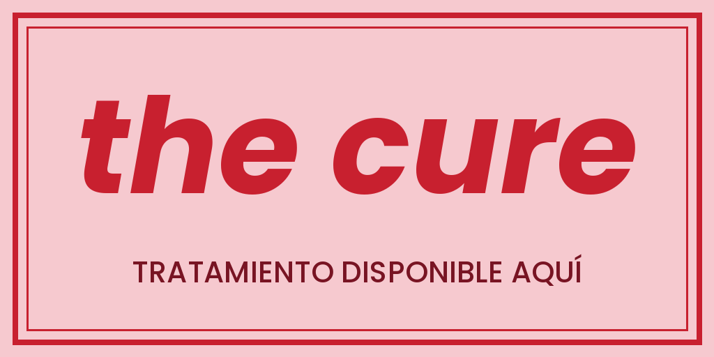
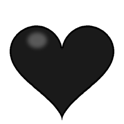
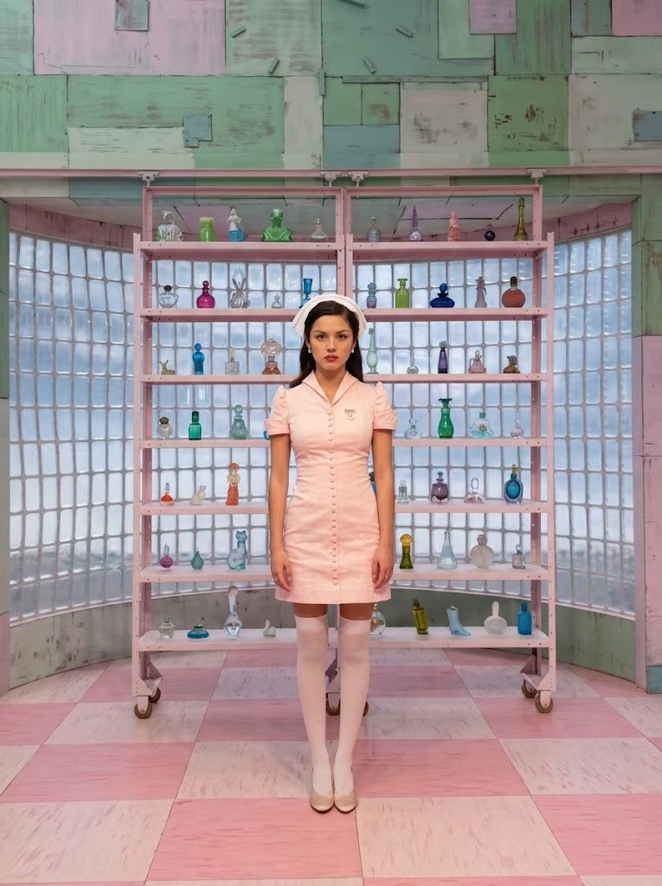

THE CURE RUN
No dejes que apaguen tu corazón.
Una enfermera corre por el pasillo interminable de un hospital. Salta los antídotos, agáchate bajo los corazones y el candelabro, y cruza cada puerta antes de que tu corazón se vuelva negro. Cada puerta acelera el juego y la canción.



Historia
El pasillo
The Cure Run está ambientado en un hospital de paredes rosadas y pisos de damero, iluminado por luces que cambian de color en cada nivel. Carteles, afiches con corazones, un extintor y bolsas de suero decoran un pasillo que no termina, y al fondo siempre hay una puerta de quirófano cerrada.
El juego toma como inspiración el videoclip de «the cure» de Olivia Rodrigo: su estética de hospital, su paleta rosa y roja y la idea de que el dolor del corazón se trata, o se esquiva, a toda velocidad.
El motivo para correr
Una enfermera lleva su teléfono en la mano y no puede detenerse: en el pasillo aparecen antídotos, corazones y un candelabro que amenazan con apagar el suyo. Cada choque ennegrece un corazón y la deja con una vida menos.
Cada 20 segundos se abre una puerta al fondo. Cruzarla significa avanzar un nivel, pero también que todo va más rápido. La meta no es llegar a un final, sino resistir lo suficiente para superar el récord.
«No dejes que apaguen tu corazón.»
Personaje principal: la enfermera

La enfermera es la única protagonista y la que el jugador controla. Corre sin parar por el pasillo, y su modelo 3D tiene animaciones propias para correr, saltar, agacharse y hablar por teléfono en el menú.
Rol
Corredora del pasillo del hospital. Su objetivo es mantener vivo su corazón y llegar lo más lejos posible.
Salto
Sube por encima de los antídotos y del corazón pequeño que llegan por el suelo.
Agacharse
Reduce su tamaño para pasar bajo el corazón mediano y el candelabro colgante.
Rasgos distintivos
Uniforme de enfermera sobre una paleta rosa, crema y roja, siempre con el teléfono a mano.
Mecánicas y controles
Se juega solo con el teclado. La enfermera corre sola: tú decides cuándo saltar y cuándo agacharte.
Esquiva los obstáculos bajos.
Pasa bajo los obstáculos altos. Se mantiene mientras la tecla esté presionada.
Comienza la partida y confirma las opciones del menú.
Detiene y reanuda la partida.
Reinicia la partida cuando termina.
Obstáculos
| Obstáculo | Tipo | Cómo esquivarlo |
|---|---|---|
| Antídoto pequeño | Bajo | Saltar |
| Antídoto grande | Bajo | Saltar |
| Corazón pequeño | Bajo | Saltar |
| Corazón mediano | Alto | Agacharse |
| Candelabro colgante | Alto | Agacharse |
Cómo se gana puntaje
Sumas 10 puntos por cada segundo que sobrevives. Si superas el récord guardado en tu navegador (500 al inicio), el juego marca «¡Nuevo récord!». No hay elementos que recolectar: lo único que importa es no chocar.
Cómo se pierde
Empiezas con 3 vidas. Cada choque te quita una, ennegrece el corazón del obstáculo y te da 1,5 segundos de invulnerabilidad. Al quedarte sin vidas aparece «JUEGO TERMINADO».
Datos e infografía
La velocidad sube con cada puerta
Velocidad de la enfermera por nivel, en unidades por segundo. Empieza en 8 y se detiene en 25 desde el nivel 13.
Jugar ahora
Haz clic dentro del juego para activarlo y usa el teclado. Para una mejor experiencia, ábrelo en pantalla completa.
Requisitos mínimos
- Computador con teclado (no funciona con el celular)
- Google Chrome, Microsoft Edge o Firefox actualizados
- WebGL 2 y aceleración por hardware activados
- 4 GB de RAM y conexión estable para la primera carga
Si algo no funciona
- La primera carga tarda unos segundos: espera a que termine la barra
- Si no suena, haz clic en el juego: el navegador pide una interacción antes de reproducir audio
- Si se ve negro, activa la aceleración por hardware o prueba otro navegador